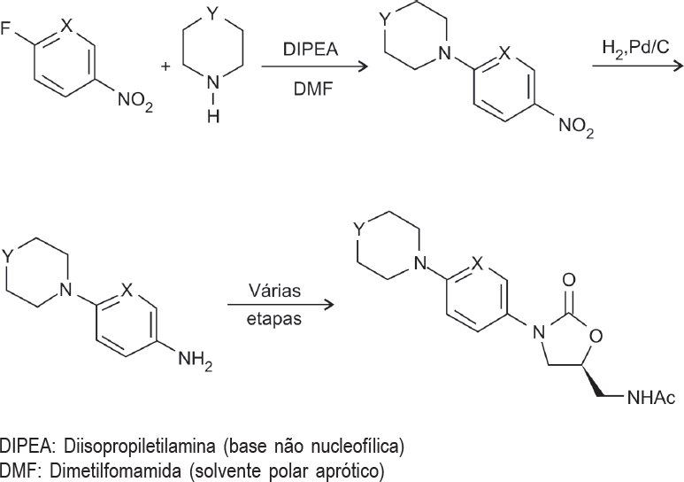

A linezolida (1) é um agente antibacteriano inibidor da biossíntese de proteínas, pertecente à classe química das oxazolidinonas. A equipe de desenvolvimento de fármacos de uma grande empresa farmacêutica, visando a desenvolver novos análogos dessa família de compostos, propôs as estruturas 2-4 para desenvolvimento. A rota de síntese desses compostos encontra-se descrita abaixo.

1 (Linezolida): X = C-F, Y = O
2: X = C-OCH3, Y = O
3: X = C-F, Y = S
4: X = N, Y = O
Com base nessas informações, pode-se afirmar que são candidatos promissores a análogos da linezolida o composto:
Está(ão) correta(s), apenas, a(s) afirmação(ões)